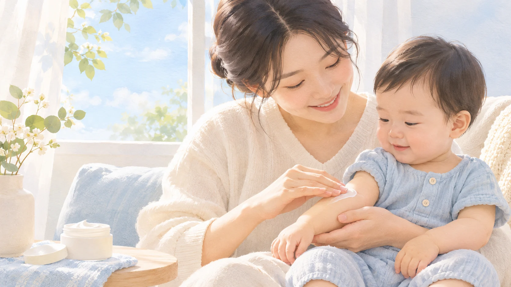
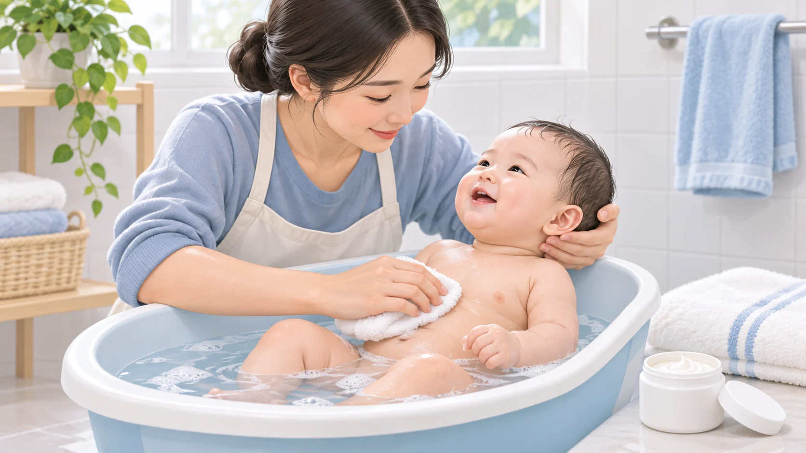
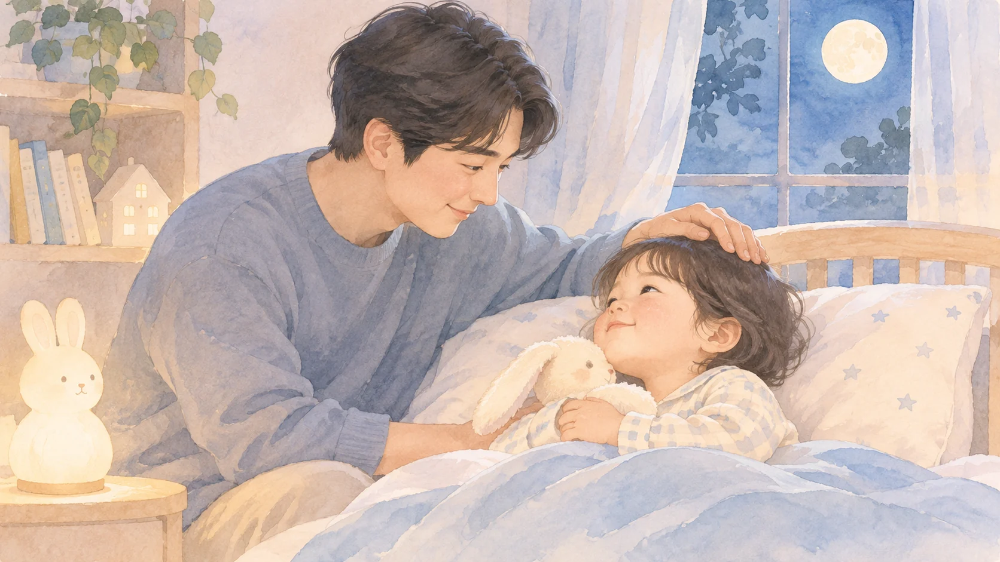

가려워하나요?
긁거나 얼굴을 비비고 보채는지 살펴보세요.
가려움과 피부 변화, 잠자는 모습을 차근차근 살펴보고 진료 때 이야기할 내용을 정리해요.
간단하게 살펴보기 → 목욕·전분욕 안내
아래 아이콘은 이해를 돕는 그림이며 실제 병변 사진이 아닙니다.
긁거나 얼굴을 비비고 보채는지 살펴보세요.
거칠거나 하얗게 일어나는 부위가 있는지 봐요.
붉거나 거친 부위가 언제, 어디에 생겼는지 봐요.
피부 때문에 자주 깨거나 잠들기 어려운지 봐요.
나이와 피부색, 염증 정도에 따라 모습은 달라집니다. 영아는 얼굴과 팔다리 바깥쪽, 더 큰 아이는 팔·다리가 접히는 부위에 습진이 나타날 수 있습니다.
이미지의 일부 소견만으로 아토피피부염을 확정할 수 없고, 가려움이 약하거나 잘 표현되지 않는 영아도 있습니다. 피부과 전문의의 진찰이 필요합니다. 한국 진단기준 원문
목욕은 피부를 부드럽게 씻고, 이후 보습으로 수분이 증발하는 것을 줄이는 과정입니다.

뜨겁지 않은 물을 사용해요. 한국 지침은 27~30°C를 제시합니다. 아이가 춥거나 불편해하지 않도록 살펴주세요.
매일 또는 아이에게 맞는 빈도로 짧게 씻겨요. 때수건으로 밀지 않고 무향의 순한 세정제는 필요한 부위에 사용해요.
수건으로 문지르지 않고 두드려 닦아요. 처방받은 약이 있으면 지시대로 사용하고, 이어서 보습제를 전신에 충분히 발라요.
마르기 전에 바로 바르고, 건조하면 낮에도 덧발라요. 진물이 심해지거나 아프고 열이 나면 진료받으세요.
아이를 욕조에 혼자 두지 말고 손이 닿는 곳에서 계속 지켜보세요. 사진은 AI 생성 교육용 이미지입니다. 한국 치료 지침 · 미국피부과학회 목욕 안내
전분욕은 기본 치료가 아니며, 영아에게 적용할 표준 농도와 효과는 확립되지 않았습니다. 먼저 물 목욕과 보습을 시행하고, 영유아·진물이나 상처가 있거나 알레르기가 의심되는 경우에는 사용 전 담당의와 상의하세요.
2002년 소규모 연구에서는 성인 아토피피부염 환자 13명에게 쌀 전분 10 g/L를 사용한 실험이 보고되었습니다. 다른 실험군의 손상 피부 회복 결과와 구분해야 하며, 이 수치나 횟수를 영유아 가정용 처방으로 받아들이면 안 됩니다. 연구 원문
최근 모습을 떠올리며 선택해 주세요. 이름이나 사진을 입력하지 않습니다. 답변은 이 화면에서만 처리되며 닫으면 사라집니다.

언제 가려웠는지, 잠은 어땠는지, 어떤 관리가 도움이 됐는지 적어두면 진료할 때 함께 이야기하기 좋아요.
상세 설문 · 피부 일지 · 관리 교실 →